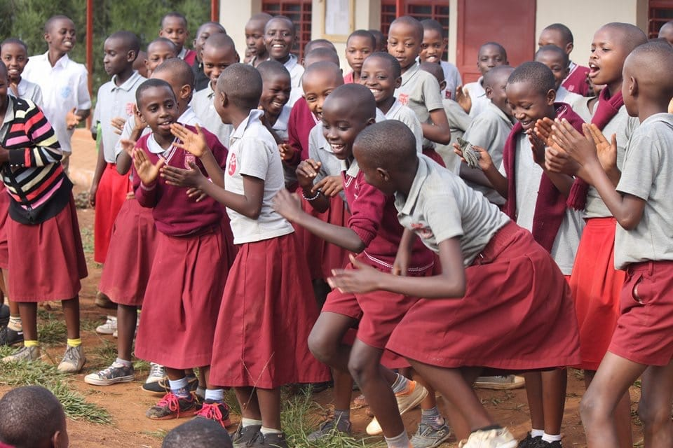
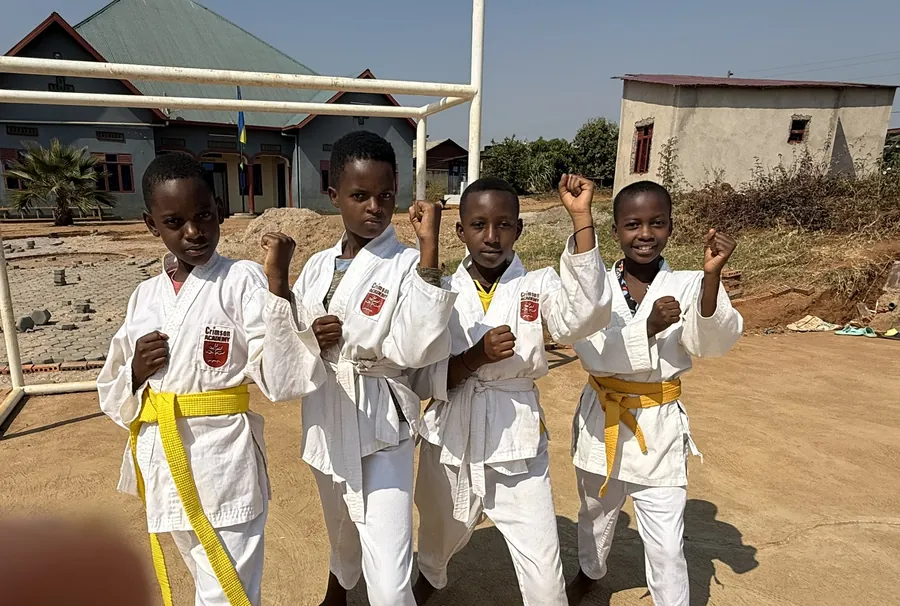

MJ
Mukarubayiza Jamila
Parent · Kagina Village
"Your visits, encouragement, and support have meant everything to me. You've strengthened my faith and reminded me that hope exists even amidst adversity."

Where faith and academic excellence grow together. Crimson Academy of Kagina is a Christian primary school educating 780 children — and, year after year, the #1 school in Rwanda's Southern Province on the National Exams.
Children carry the hopes of the future. We are committed to learning experiences that help each student reach their greatest potential — developing the whole child: spiritual, moral, intellectual, social, emotional, and physical — with the understanding, compassion, and courage to act on their beliefs.
Founded in 2011 with four classrooms and 181 students, Crimson Academy now serves a thriving community in the heart of Kamonyi District, shaped by an environment that mirrors the character of Christ.

Aligned to Rwanda's National Competence-Based Curriculum (MINEDUC), from the first day of nursery to the National Exam.

A joyful foundation where our youngest learners build language, curiosity, and character.
Core literacy and numeracy across three languages, with creative arts and sports every week.
Rigorous National Exam prep — our P6 class averaged 90.4%, every graduate placed in a top boarding school.
At Crimson Academy, character is formed in worship, in service, on the field, and on the stage. Our students learn what it means to lead with humility and to give back to the village that surrounds them.
"For even the Son of Man did not come to be served, but to serve." — Mark 10:45




Your sponsorship gives a child in Kagina access to a world-class education, daily meals, and a future full of opportunity.
Through our monthly outreach, Crimson Academy walks alongside the families of the village we call home.
"Your visits, encouragement, and support have meant everything to me. You've strengthened my faith and reminded me that hope exists even amidst adversity."
"You have been a blessing to our lives — teaching God's Word and meeting both our physical and spiritual needs."
"Your visits and prayers have lit a fire again in my life. Thank you for the kindness this school shows to the families all around us."

Leading Crimson Academy's mission of faith, character, and academic excellence in the Kamonyi District.
The live homepage's Team section still says "34 dedicated staff." The staff directory was corrected to 32 earlier in this project (and the Admissions FAQ was fixed to match) — this mockup uses 32 for consistency. The real Home.tsx / Team.tsx needs the same fix regardless of which mockup is chosen.